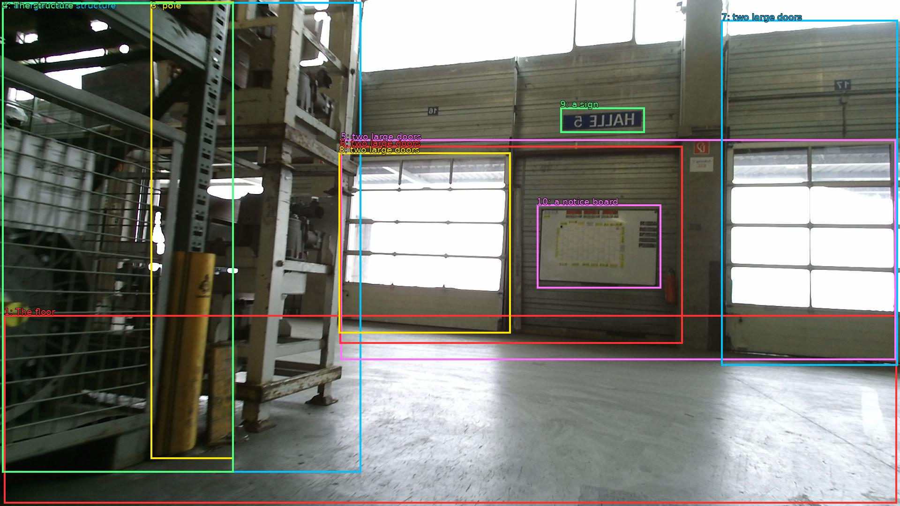

The image shows the interior of a large industrial building with a high ceiling and large windows. The floor is made of concrete and the walls are made of corrugated metal. On the left side of the image, there is a large metal structure with a yellow pole and a metal railing. The structure appears to be a conveyor belt or a control panel. In the background, there are two large doors with shutters on the right side. Above the doors, there has a sign that reads "HALL 2" and below the doors is a notice board with information about the building. The overall atmosphere of the space is industrial and industrial.

Original · Caption raw · Grounding raw · Koordinate
Številke so lokalni ID regije. Dolge slikovne oznake so skrajšane; spodaj so celotne fraze. Napovedane regije se lahko prekrivajo ali opisujejo skupine.
| ID | Celotna fraza | bbox xyxy |
|---|---|---|
| 1 | The floor | [8.639999389648438, 672.300048828125, 1913.2799072265625, 1074.06005859375] |
| 2 | a large metal structure | [4.799999713897705, 4.860000133514404, 770.8800048828125, 1008.1800537109375] |
| 3 | pole | [321.6000061035156, 3.7800002098083496, 498.239990234375, 979.02001953125] |
| 4 | The structure | [4.799999713897705, 5.940000057220459, 498.239990234375, 1008.1800537109375] |
| 5 | two large doors | [726.719970703125, 297.5400085449219, 1911.3599853515625, 768.4200439453125] |
| 6 | two large doors | [724.7999877929688, 311.58001708984375, 1456.3199462890625, 733.8600463867188] |
| 7 | two large doors | [1538.8800048828125, 42.65999984741211, 1915.199951171875, 780.300048828125] |
| 8 | two large doors | [722.8800048828125, 325.6200256347656, 1089.5999755859375, 711.1800537109375] |
| 9 | a sign | [1195.199951171875, 229.50001525878906, 1375.679931640625, 283.5] |
| 10 | a notice board | [1145.280029296875, 436.8600158691406, 1410.239990234375, 615.0599975585938] |